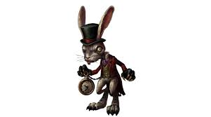

Húsvéti ünnepkör
Húsvét a keresztény világ legnagyobb ünnepe, Jézus kereszthalálának és feltámadásának emlékére. A zsidó vallásban Pészachkor ( jelentése elkerülni, kikerülni ) ünneplik az egyiptomi rabságból való szabadulást. Magyarul a kovásztalan kenyér (macesz) ünnepének
is nevezik, mert a fáraó annyi időt sem hagyott a zsidóknak az Egyiptomból való távozásra, ameddig a kenyerüket megkeleszthették volna, ezért a vízből és lisztből gyúrt kelesztés nélküli maceszt (pászkát) ették. Eredetileg a két ünnep
időben egybeesett, majd 325-ben a niceai zsinat a keresztény húsvétot a tavaszi napéjegyenlőséget (március 21.) követő első holdtölte utáni vasárnapra tette. Mivel ez az időpont évről-évre változó, a Húsvét ún. mozgó ünnep. Az ünnepet
megelőző 40 nap a nagyböjt, Jézus 40 napos pusztai böjtjének emlékére,a felkészülés, a lelki és testi megtisztulás ideje.
A név eredete
Húsvét az azt megelőző időszak, Jézus sivatagi böjtjének emlékére tartott negyvennapos nagyböjt lezárulását jelzi. A katolikus kereszténységben böjtnek nevezett, valójában „húshagyó” táplálkozási időszak után ezen a napon szabad először húst enni. A böjt utolsó hetének neve: „nagyhét”, a húsvét utáni hét húsvét hete, egyes magyar vidékeken „fehérhét” – fehérvasárnapig tart. A magyar szó: „húsvét”, a negyvennapos
böjt lezárulását jelzi. Melléknévi származéka a húsvéti, amelynek első írásos előfordulása 1470-ből való. A húsvétnak mint tavaszváráshoz kapcsolható zsidó ünnepnek héber neve „pészah”. A szó „kikerülés”-t, „elkerülés”-t jelent, utalva
arra, hogy a halál angyala elkerülte a zsidóknak bárány vérével megjelölt házait. Innen származik a ritkábban használt angol név, a passover is. A kifejezés az ünnep magyar nevében nem található meg, de Csíkménaságon a húsvéti körmenet
neve: „kikerülés”. Az angol Easter a német Ostern szóval együtt keresendő. Őse egy germán istennő, Ostara a tavasz keleti úrnője, ünnepe a tavaszi nap-éj egyenlőség idején volt. Ostarához kapcsolódik a tojás
szimbóluma. Dél-Németországból ismert az a húsvéti népszokás, hogy a felnőttek tojásokat rejtenek el a tavaszi fűben, és azokat a gyerekeknek kell megtalálniuk.
Virágvasárnap
Virágvasárnap szerepe, hogy bevezesse a szent háromnap liturgiáját. Egyben a nagyböjti előkészület csúcspontja is, mert a Jeruzsálembe való megérkezést jelenti. Ezen a napon a pap a vértanúságot jelképező piros ruhát vesz fel. A misén Máté, Márk, Lukács
evangéliumából olvassák fel a passiót, meghatározott rendben, minden évben másikat. A nagyhéten hétfőn, kedden és szerdán nincs különösebb szertartás.
Nagycsütörtök
Nagycsütörtök az utolsó vacsora emléknapja, az Eucharisztia (oltáriszentség) alapításának ünnepe. Ilyenkor a székesegyházakat kivéve minden templomban csak egy mise van, az esti órákban. Tilos bármilyen más mise. A székesegyházban délelőtt van az úgynevezett
Krizmaszentelési mise. Ezen a misén az adott egyházmegye összes papjának részt kell vennie. Itt megújítják papi fogadalmukat, valamint a püspök megáldja és megszenteli az azt követő évben használt szent olajokat és a krizmát. Háromféle
szent olaj van, amit meghatározott szertartásban használnak: Keresztelendők olaja Betegek kenete Krizma A nagycsütörtöki esti misén
a pap az örvendezést, ünneplést jelentő fehér ruhában van. Az orgona szól, egészen a Dicsőség a magasságban Istennek… kezdetű himnuszig, ami alatt szólnak a harangok, és a csengők is. Utána húsvét vigiliájáig se az orgona, se a csengő
nem szól. Ez jelképezi, hogy senki nem szólt Jézus mellett. A prédikáció után (ahol megtartják) a lábmosás szertartása jön. Ennek hagyománya a Bibliában található, Jézus az utolsó vacsorán megmosta tanítványai
lábát. A mise után következik az ún. oltárfosztás. Ez jelképezi, hogy Jézust megfosztották ruháitól. Ennek nincs szertartása, csendes. A mise után általában a templomokban virrasztást szoktak tartani, mondván Jézus tanítványai elaludtak.
Nagypéntek
Ezen a napon nincs mise. Téves és kerülendő kifejezés a „csonka mise”. Nagypénteken Igeliturgia van, áldoztatással. A pap a szertartást piros vagy lila öltözékben végzi. A papság és a segítők teljes csendben vonulnak be a templomba, s az üres oltárszekrényelőtt leborulnak. Ezt követi az Igeliturgia: Isten szenvedő szolgájáról szól az olvasmány, a szentlecke, és János evangéliumából olvassák fel a passiót. Ezután jön az évente egyszeri tisztelgés a kereszt előtt, a Kereszthódolat.
Az igeliturgia teljes csendben áldoztatással ér véget. Nincs áldás, nincs elbocsátás.
A türténetről szóló filmek
Isten fia
Jézus élete